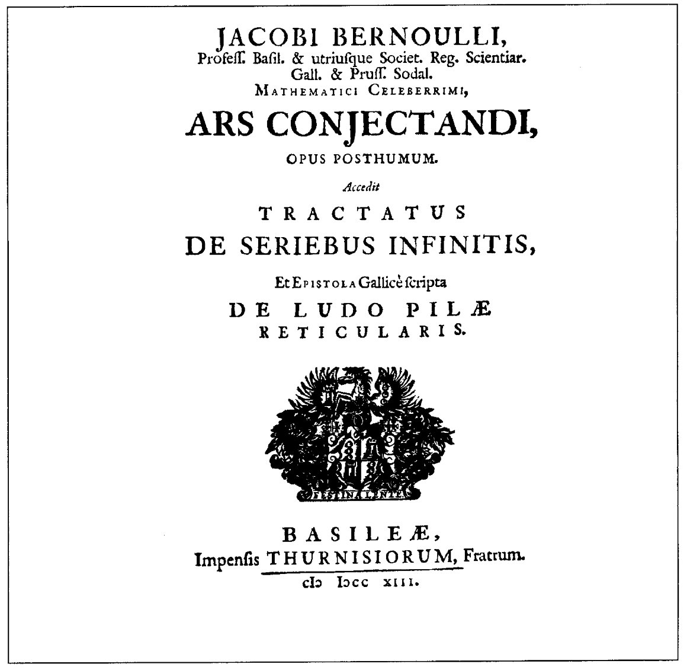
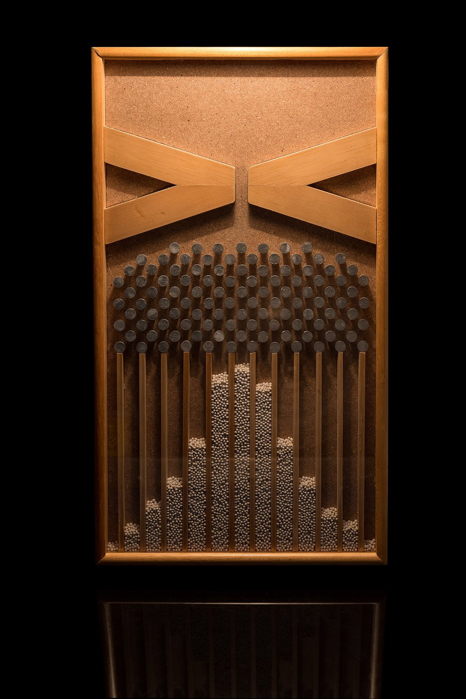
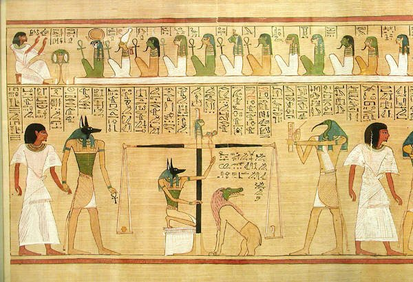
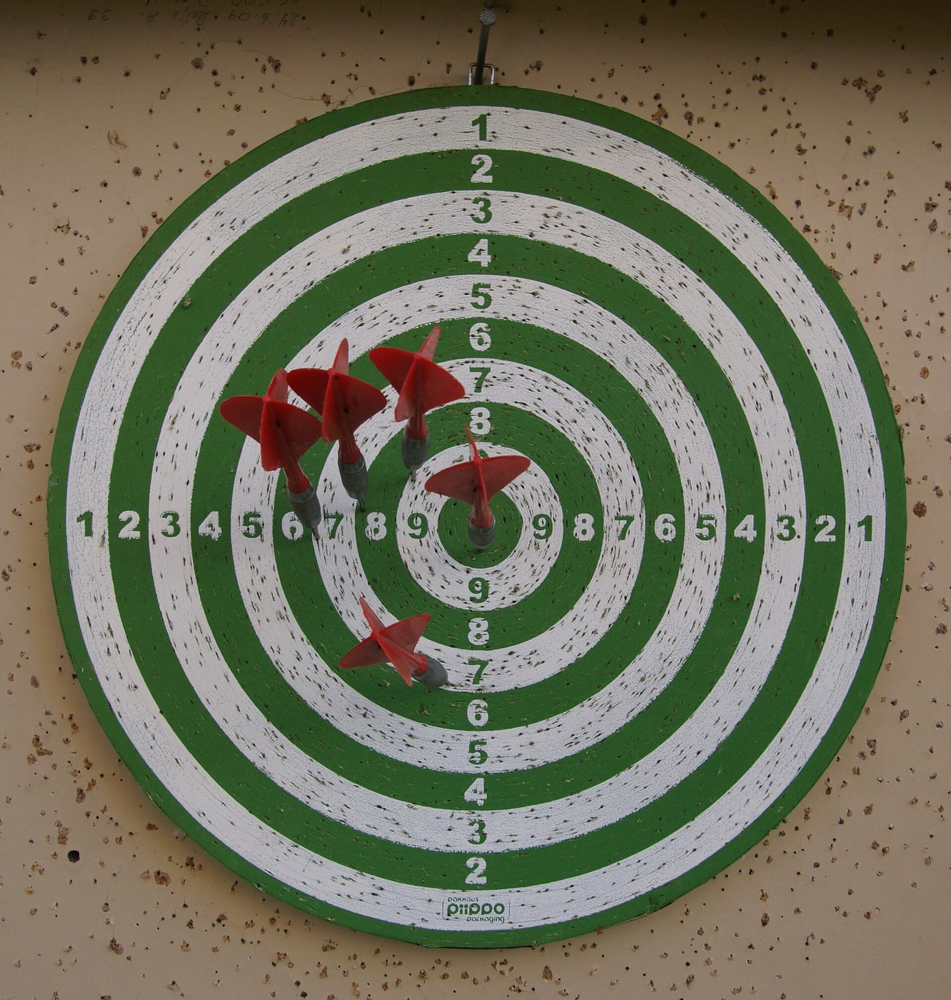
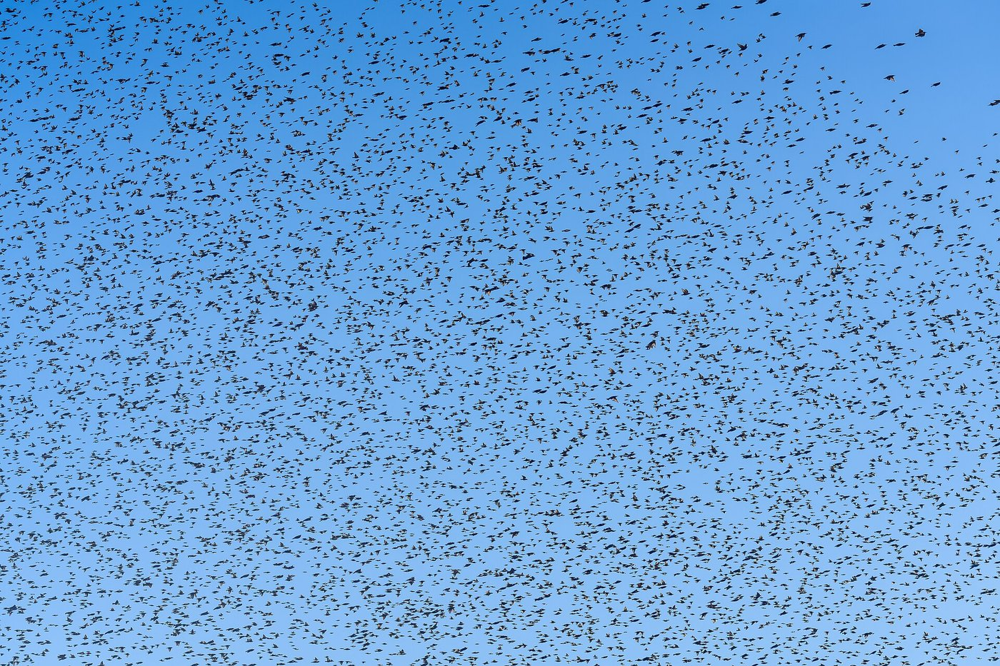
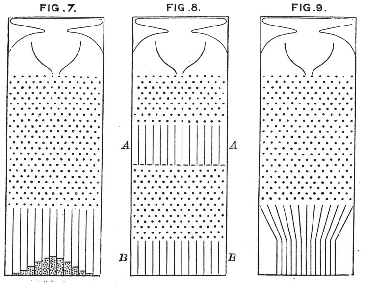

第44回
黒い面に、青・赤・緑・白のサイコロが山になって映り込んでいる。
Dietmar Rabich（2021年、色とりどりのサイコロ）／CC BY-SA 4.0／Wikimedia Commons（横長に切り出した）
同じ条件で測っても結果がばらつく量を、数学で扱う道具。「起こりうる結果の全体」「確率」「確率変数」「分布」を順に定め、1つの数で代表させる期待値と、ばらつきの大きさを表す分散を、サイコロ・コインのような離散の場合と、一様分布・指数分布のような連続の場合の両方で、1行ずつ導く。
第1回から続く約束どおり、新しい記号は緑色の枠（記号）で「①読み方 ②日本語での意味 ③省略していない書き方 ④どこで出会うか」を書く。この回では特に、$P(X=x)$ という書き方が何を省略しているかと、期待値 $E[X]$ の書き方が何段階で省略されていくかを、省略の段階の箱で1段ずつ示す。
高校の数学Ⅰ・A・Bで習った確率・期待値・分散も、仮定せずに一度は書く。覚えている部分は飛ばしてよい。すべての導出は、数値で一度手を動かしてから文字の式に進む。
この回の記号は、後ろの回で何度も使われる。特に第47回で自前で定義している平均 $\bar x$ は、この回の データの平均（3.2）と同じものである。正規分布・中心極限定理・誤差の伝播は第45回、標本平均と推定は第46回で扱い、この回では予告だけにする。
最初に、この回で新しく説明する記号と、前の回で説明済みの記号を分けて並べる。右の列の「→」で説明のある場所へ飛べる。
| 記号 | 読み方 | ざっくりした意味 | 説明 |
|---|---|---|---|
| $\Omega$（標本空間）、事象 $A$ | オメガ、じしょう | 起こりうる結果の全体、その部分集合 | →1.2 |
| $P(A)$（確率） | ピー・エー | 事象 $A$ の起こりやすさを表す 0 以上 1 以下の数 | →1.3 |
| $P(A\mid B)$、独立 | ピー・エー・ギブン・ビー | $B$ が分かっているときの $A$ の確率／互いに影響しない | →1.4 |
| $X$（確率変数）、$P(X=x)$ | エックス（かくりつへんすう） | 結果を数に直す関数／「$X$ が $x$ になる」確率 | →2.1 |
| $p_X(x)$（確率質量関数） | ピー・エックス・オブ・エックス | 値ごとの確率の表（離散） | →2.2 |
| $E[X]$、$\mathbb E[X]$（期待値）、$\mu$ | イー・エックス、ミュー | 確率で重みをつけた平均 | →3.2、→3.2 |
| $\bar x$（データの平均） | エックス・バー | データを足して個数で割ったもの。期待値の特別な場合 | →3.2 |
| $\operatorname{Var}(X)$（分散）、$\sigma$（標準偏差） | バリアンス、シグマ | 期待値からのずれの2乗の平均／その平方根 | →4.2、→4.3 |
| $f_X(x)$（確率密度関数） | エフ・エックス | 連続の確率の表。面積が確率になる | →5.2 |
| $\displaystyle\int_a^\infty$（広義積分） | アルファからインフィニティまでのインテグラル | 上端を限りなく大きくしたときの積分の極限 | →5.2 |
| $F_X(x)$（累積分布関数） | エフ・エックス | $X\le x$ となる確率 | →5.3 |
| $U(a,b)$（一様分布）、$\operatorname{Exp}(\lambda)$（指数分布） | ユニフォーム、エクスポネンシャル | 一様に広がる分布／待ち時間の分布 | →5.5、→5.6 |
| 記号 | 意味 | 初出 |
|---|---|---|
| $=$、$:=$、$\approx$ | 等しい／左の名前を右の式で決める／ほぼ等しい | 第1回 2.1、2.2、2.4 |
| $\in$、$\{\cdots\mid\cdots\}$、$\subset$ | 要素である／条件で集める／部分集合 | 第2回、第2回、第2回 |
| $\cup$、$\cap$、$\emptyset$、$A^{c}$（補集合） | 和集合・共通部分・空集合 | 第2回、第2回、第2回 |
| $\mathbb R$、$[a,b]$（区間） | 実数全体／$a$ 以上 $b$ 以下の実数 | 第2回、第2回 |
| $f\colon A\to B$、$f(x)$ | 関数、関数の値 | 第3回、第3回 |
| 値域、$\exp$、$|x|$ | 出力の集まり／指数関数／絶対値 | 第3回、第3回、第3回 |
| $\displaystyle\sum$（総和）、二重和 | 足し算の記号 | 第4回 2.1、5.2 |
| $\displaystyle\lim$、$\infty$ | 極限、限りなく大きい | 第6回、第6回 |
| $f'$、$\dfrac{df}{dx}$ | 導関数 | 第7回、第7回 |
| ロピタルの定理 | $0/0$ や $\infty/\infty$ の極限 | 第8回 |
| $\displaystyle\int_a^bf(x)\,dx$（定積分） | リーマン和の極限（符号つき面積） | 第10回 3.2 |
| リーマン和、微積分学の基本定理、$[F]_a^b$ | 区切って足す／定積分＝原始関数の差 | 第10回、第10回、第10回 |
| 部分積分 | 積の微分を逆にたどる | 第10回 7.1 |
PHOTO 1｜現実

「推測術 ヤコブ・ベルヌーイ著 遺作」と印刷された扉である。
Jakob Bernoulli『Ars Conjectandi』の扉（Commons の題は1713年）／Public domain／Wikimedia Commons（縮小した）
これまでの回の道具は、関数のように「入力を決めれば出力が1つに決まる」世界を扱ってきた。ところが研究室では、次のような量に出会う。
こうした量は、「入力を決めれば出力が決まる」という関数では書けない。かといって、「何も言えない」わけでもない。たとえば「ほとんどの測定は $10.02\pm0.01$ に入る」とか、「平均して2000時間もつ」とは言える。この「何が、どれくらい起こりやすいか」を数で書くのが確率である。
この回では、まず確率の最小の言葉（標本空間・事象・確率）を、サイコロという最も小さい例で決める。サイコロにしたのは、起こりうる結果が $6$ つしかなく、全部を紙に書けるからである。
①読み方：$\Omega$ は「オメガ」（ギリシャ文字の大文字、第1回）。名前は「ひょうほんくうかん」。$A$ などの事象は「じしょう」。
②日本語での意味：標本空間 $\Omega$ は、その実験で起こりうる結果を、もれなく重なりなく全部集めた集合。事象 $A$ は、$\Omega$ の部分集合で、「結果がこの集まりのどれかである」という出来事を表す。
③省略していない書き方：サイコロを1回振るなら、$\Omega:=\{1,2,3,4,5,6\}$。「偶数の目が出る」という事象は、$A:=\{\omega\in\Omega\mid\omega\text{ は偶数}\}=\{2,4,6\}$。ここで $\omega$（小文字のオメガ）は、$\Omega$ の要素である「1つの結果」を表す名前である（集合の内包表記、$\in$）。事象が1つの結果だけからなるとき（例 $\{3\}$）は根元事象という。
④どこで出会うか：確率論のすべての出発点。実験では「$\Omega=$ 測定値が取りうる範囲（例：$[0,\infty)$）」のように、連続の集合になることもある（第5章）。
事象は集合だから、第2回の演算がそのまま使える。「偶数 または 3の倍数」は和集合 $\{2,4,6\}\cup\{3,6\}=\{2,3,4,6\}$（$\cup$）、「偶数 かつ 3の倍数」は共通部分 $\{2,4,6\}\cap\{3,6\}=\{6\}$（$\cap$）、「偶数ではない」は補集合 $A^{c}=\Omega\setminus A=\{1,3,5\}$（$\setminus$）である。
図1.1 を見る。標本空間を「箱」、結果を箱の中の点、事象を点の集まりを囲んだ線と見る。
動機：事象に「起こりやすさ」を表す数を割り当てたい。割り当て方は、勝手ではなく、「全部合わせて100%」「重ならない出来事の確率は足せる」という、あたりまえの約束を満たすものにする。
①読み方：「ピー・エー」。$P$ は probability（確率）の頭文字。「事象 $A$ の確率」と読む。
②日本語での意味：$\Omega$ の部分集合（事象）1つを渡すと、$0$ 以上 $1$ 以下の数を1つ返す関数。次の3つの約束を満たすものだけを確率と呼ぶ。
③省略していない書き方：$P\colon\{\Omega\text{ の部分集合}\}\to[0,1]$、$A\mapsto P(A)$。第3回の関数の書き方で言えば、定義域は「事象全体の集合」、値域は区間 $[0,1]$ である。入力が数ではなく集合である点が、これまでの関数と違う。
④どこで出会うか：確率・統計のすべて。信頼性工学（故障確率）、信号処理（雑音）、機械学習（分類の確率）。
最小の具体例。公平なサイコロでは、$6$ つの結果が同じ程度に起こりやすいので $P(\{i\})=\dfrac16$（$i=1,\dots,6$）と割り当てる。すると、重ならない $\{2\},\{4\},\{6\}$ に（P3）を2回使って、
$$P(\{2,4,6\})=P(\{2\})+P(\{4\})+P(\{6\})=\frac16+\frac16+\frac16=\frac36=\frac12.$$
つまり「偶数の目が出る確率は $\dfrac12$」。（P2）の確認：$P(\Omega)=6\cdot\dfrac16=1$。図1.2 を見る。
導出：補集合の確率。約束 (P1)〜(P3) だけから、次を1行ずつ導く。
$$P(A^{c})=1-P(A).$$
① $A$ と $A^{c}$ は同時には起こらない：$A\cap A^{c}=\emptyset$。
② よって (P3) より $P(A\cup A^{c})=P(A)+P(A^{c})$。
③ $A\cup A^{c}=\Omega$。
④ (P2) より $P(A\cup A^{c})=P(\Omega)=1$。
⑤ ②と④を合わせて $P(A)+P(A^{c})=1$。両辺から $P(A)$ を引いて $P(A^{c})=1-P(A)$。
確かめ：偶数でない確率 $=1-\dfrac12=\dfrac12$。直接数えると $P(\{1,3,5\})=\dfrac36=\dfrac12$。一致する。
もう1つ：重なる場合。同時に起こりうる $A,B$ では、足し算が二重に数えるので、重なりを1回引く。
$$P(A\cup B)=P(A)+P(B)-P(A\cap B).$$
数値で確かめる。$A=\{2,4,6\}$（偶数）、$B=\{3,6\}$（3の倍数）。$A\cup B=\{2,3,4,6\}$ で $P(A\cup B)=\dfrac46$。右辺：$\dfrac36+\dfrac26-\dfrac16=\dfrac46$。一致する。（理由：$A\cup B$ を「$A$」と「$B$ のうち $A$ に入らない部分」に分けて (P3) を使うと出る。この回は数値での確認にとどめる。）
「確率 $0$ の事象は絶対に起こらない」「確率 $1$ の事象は必ず起こる」は、離散の場合だけ正しい。連続の場合（第5章）は、「ちょうど $2.000\cdots$ 秒」のような確率 $0$ の事象が、実際に起きる（測れば何かの値にはなる）。確率 $0$ は「起こらない」ではなく、「長さ（面積）がゼロ」の意味である。
また「確率は、やってみた回数の割合だ」というのは、正確ではない。割合（相対頻度）は実験の結果で、確率はモデルの数である。回数を増やすと割合が確率に近づく（大数の法則）ことは、3.5 で図にして見る。
動機：「偶数と分かっているとき、6 が出る確率は？」のように、情報が増えた後の確率を知りたい。2つのサイコロを同時に振る問題（2.3）でも、「片方が何でももう片方に影響しない」ことを式にする必要がある。
①読み方：$P(A\mid B)$ は「ピー・エー・ギブン・ビー」または「$B$ のもとでの $A$ の確率」。縦棒 $\mid$ は「〜が分かっているとき」の記号。
②日本語での意味：事象 $B$ が起こったと分かっているとき、そのうえで $A$ も起こる確率。$B$ の中だけを新しい標本空間と見て、その中での $A$ の割合を測る。
③省略していない書き方：$P(B)\gt0$ のとき、
$$P(A\mid B):=\frac{P(A\cap B)}{P(B)}.$$
「$B$ の確率で、$A$ かつ $B$ の確率を割る」＝「$B$ の中で $A$ が占める割合」。事象 $A,B$ が独立であるとは、$P(A\cap B)=P(A)\,P(B)$ が成り立つこと。このとき $P(A\mid B)=\dfrac{P(A)P(B)}{P(B)}=P(A)$ となり、「$B$ が分かっても $A$ の確率が変わらない」ことと同じである。
④どこで出会うか：信頼性（「ここまで壊れずに動いた」後の寿命。5.6）、ベイズの定理、ノイズが互いに独立と仮定する推定。
最小の具体例：$A=\{6\}$（6が出る）、$B=\{2,4,6\}$（偶数）。$A\cap B=\{6\}$ なので $P(A\mid B)=\dfrac{1/6}{1/2}=\dfrac13$。「偶数と分かれば、候補は $2,4,6$ の3つで、そのうち6は1つ」という直観と合う。
条件つき確率を、マスの数で見ると図1.3 になる。
独立の例：コインを2回投げる。$A=$「1回目が表」、$B=$「2回目が表」。4通り $\{HH,HT,TH,TT\}$ は同程度に起こりやすいとして、$P(A\cap B)=P(\{HH\})=\dfrac14=\dfrac12\cdot\dfrac12=P(A)P(B)$。独立である。
PHOTO 2｜現実

木の枠の中で、くぎの列を通った玉が、下の仕切りに山の形に積もっている。
Estes Objethos Atelier 制作、Rodrigo.Argenton 撮影（2016年、ブラジル・USP の数学博物館のガルトン板）／CC BY-SA 4.0／Wikimedia Commons（縮小した）
MITATE 2｜見立て
赤と黄の機械の円い窓が光り、下の受け皿に金属の玉が見える。
Piotrus（2010年、ピッツバーグの大会のパチンコ機）／CC BY 3.0／Wikimedia Commons（縮小した）
動機：コインの結果は「表」「裏」で、足したり平均したりできない。実験では結果を数に直して扱う（例：3回投げて表が何回出たか）。結果ごとに数を1つ決める規則は、関数そのものである。
①読み方：$X$ は「エックス」、名前は「かくりつへんすう」。$P(X=x)$ は「ピー・エックス イコール エックス」、「$X$ が $x$ になる確率」。
②日本語での意味：確率変数 $X$ は、標本空間の各結果 $\omega$ に実数 $X(\omega)$ を対応させる関数。名前に「変数」とあるが、実体は関数である（ここがこの記号の最大の紛らわしさ）。大文字 $X$ は「関数としての確率変数」、小文字 $x$ は「それが取る値の1つ」を表す。
③省略していない書き方：$X\colon\Omega\to\mathbb R$、$\omega\mapsto X(\omega)$（関数、$\mapsto$）。そして
$$P(X=x)\;:=\;P\bigl(\{\omega\in\Omega\mid X(\omega)=x\}\bigr).$$
右辺の $\{\omega\in\Omega\mid X(\omega)=x\}$ は、「$X$ の値が $x$ になる結果 $\omega$ をすべて集めた事象」。それに $P$ を適用している。
④どこで出会うか：確率・統計・信号処理のすべて。測定値、雑音、寿命、サイコロの出目。
| 段階 | 書き方 | 省いたもの | 省いても誤解が起きない理由／起きる場合 |
|---|---|---|---|
| S0 | $P\bigl(\{\omega\in\Omega\mid X(\omega)=x\}\bigr)$ | （省略なし） | — |
| S1 | $P(X=x)$ | 集合の波括弧、$\omega\in\Omega$、$X(\omega)$ の引数 $\omega$ | 「$X=x$」が事象（結果の集まり）の略記だと約束してあるから。$X$ が関数であることを覚えていれば、$X=x$ は「$X(\omega)=x$ となる $\omega$ の集まり」としか読めない |
| S2 | $p_X(x)$、$p(x)$ | 「$X=$」を添字に回す／さらに添字も落とす | どの確率変数の表かが文脈で決まるとき。$X$ と $Y$ が同時に出る文では、添字を落とすと $p(x)$ と $p(y)$ が同じ関数に見えて事故る |
| S3 | $p_i$（$x_i$ の確率） | 値 $x$ のかわりに番号 $i$ を使う | 値に番号 $x_1,x_2,\dots$ をつけてあるとき。$\sum$ と相性がよい |
以後、この回では S1（$P(X=x)$）と S2（$p_X(x)$）を使い分ける。迷ったら S0 に戻す。
最小の具体例。公平なコインを3回投げる。$\Omega$ は $8$ 通り：
$$\Omega=\{HHH,\,HHT,\,HTH,\,THH,\,HTT,\,THT,\,TTH,\,TTT\}.$$
（$H$ は表 head、$T$ は裏 tail。左から1回目、2回目、3回目。）確率変数を $X:=$「表の回数」とする。各結果に対する $X$ の値は、
| 結果 $\omega$ | $HHH$ | $HHT$ | $HTH$ | $THH$ | $HTT$ | $THT$ | $TTH$ | $TTT$ |
|---|---|---|---|---|---|---|---|---|
| $X(\omega)$ | 3 | 2 | 2 | 2 | 1 | 1 | 1 | 0 |
8通りは同程度に起こりやすい（各 $\dfrac18$）。図2.1 を見る。たとえば $X=2$ となる結果は $\{HHT,HTH,THH\}$ の3つなので、
$$P(X=2)=P(\{HHT,HTH,THH\})=\frac18+\frac18+\frac18=\frac38.$$
同じように数えて、$P(X=0)=\dfrac18$、$P(X=1)=\dfrac38$、$P(X=3)=\dfrac18$。
「$X$ は変数だから、$X$ に $2$ を代入できる」は誤り。$X$ に入れるのは結果 $\omega$ で、$X(\omega)$ が数になる。$X=2$ は「$X(\omega)=2$ となる結果の集まり」という事象であり、数の等式ではない。
①読み方：「ピー・エックス・オブ・エックス」。名前は「かくりつしつりょうかんすう」。添字の $X$ は「どの確率変数の」、括弧の中の $x$ は「どの値で」。
②日本語での意味：$X$ が取りうる値のそれぞれについて、その値になる確率を返す関数。いわば確率の表。値が飛び飛び（離散）の確率変数に使う。
③省略していない書き方：$p_X(x):=P(X=x)$。取りうる値の集まり（値域）を $\{x_1,x_2,\dots,x_k\}$ とすると、次の2つが成り立つ。
$$p_X(x_i)\ge0\ \ (i=1,\dots,k),\qquad \sum_{i=1}^{k}p_X(x_i)=1.$$
後者は、(P2)「全体で $1$」と、(P3)「重ならない事象は足せる」を使って出る（$X$ の値ごとに $\Omega$ を分けると、重ならない $k$ 個の事象に分かれる）。和は第4回の $\sum$ の完全形である。
④どこで出会うか：棒グラフ（ヒストグラム）、二項分布、ポアソン分布、デジタル信号の誤りの数。
2.1 のコインの例では、$p_X(0)=\dfrac18$、$p_X(1)=\dfrac38$、$p_X(2)=\dfrac38$、$p_X(3)=\dfrac18$。足すと $\dfrac{1+3+3+1}{8}=1$ ✓。図2.2 を見る。
確率の問題は、この表を使うと足し算になる。たとえば「表が2回以上」は $\{X=2\}\cup\{X=3\}$ で、重ならないから
$$P(X\ge2)=p_X(2)+p_X(3)=\frac38+\frac18=\frac48=\frac12.$$
公平なサイコロを2つ振り、目の和を $Y$ とする。2つのサイコロは互いに独立（1.4）とすると、$36$ 通り $(i,j)$ のどれも $\dfrac16\cdot\dfrac16=\dfrac1{36}$ である。和が $s$ になる組を数えると、
| 和 $s$ | 2 | 3 | 4 | 5 | 6 | 7 | 8 | 9 | 10 | 11 | 12 |
|---|---|---|---|---|---|---|---|---|---|---|---|
| 組の数 | 1 | 2 | 3 | 4 | 5 | 6 | 5 | 4 | 3 | 2 | 1 |
一般に $p_Y(s)=\dfrac{6-|s-7|}{36}$（$s=2,\dots,12$）。たとえば $s=5$ は $(1,4),(2,3),(3,2),(4,1)$ の4通りで $p_Y(5)=\dfrac4{36}=\dfrac19$。図2.3 を見る。7が最も出やすく、そこから離れるほど出にくい。
全部足して確かめる：$\dfrac{1+2+3+4+5+6+5+4+3+2+1}{36}=\dfrac{36}{36}=1$ ✓。
PHOTO 3｜現実
環とかぎの付いた、青緑色の古い金属のはかりが、物差しの上に置かれている。
Oxfordshire County Council／Anni Byard（2010年、ローマ時代の竿ばかり。Portable Antiquities Scheme の出土品）／CC BY-SA 2.0／Wikimedia Commons
MITATE 3｜見立て

天秤で心臓の重さを量る場面を、動物の頭を持つ神々が見守っている。
ヘゥネフェルの『死者の書』の心臓の計量の場面（Commons の記載は紀元前1275年ごろ）／Public domain／Wikimedia Commons（左側を切り出した）
分布の表全体は、情報が多すぎて比べにくい。「この分布の中心はどこか」を1つの数で言いたい。それには、中学以来なじみの「平均」を使うのが自然である。データ $x_1,x_2,\dots,x_n$ の平均は
$$\frac{x_1+x_2+\cdots+x_n}{n}.$$
最小の具体例。サイコロを $3$ 回振って、$1,\,2,\,2$ が出たとする。平均は $\dfrac{1+2+2}{3}=\dfrac53$。ここで足し算を値ごとにまとめると、
$$\frac{1+2+2}{3}=\frac{1\cdot1+2\cdot2}{3}=1\cdot\frac13+2\cdot\frac23.$$
① 同じ値 $2$ が $2$ 回あるので、$2+2=2\cdot2$ とまとめた。
② 分母の $3$ を各項に分けた。
③ すると $\dfrac13$ は「値 $1$ が出た割合（相対頻度）」、$\dfrac23$ は「値 $2$ が出た割合」。つまり平均は「値 × その値の割合」の和である。
もし割合のかわりに、確率 $p_X(x)$ を使えば、「実験を何度も繰り返したときの平均」の理想形が書ける。これが期待値である。
①読み方：「イー・エックス」または「エックスの期待値」。$E$ は expectation（期待）の頭文字。黒板では二重線の $\mathbb E$ と書き、同じ意味である。角括弧 $[\ ]$ は丸括弧 $(\ )$ と同じ「入力を囲む」記号で、確率変数を入れるときに角括弧にするのが習慣。
②日本語での意味：確率変数 $X$ の値を、起こりやすさで重みをつけて平均したもの。実験を無限に近く繰り返したときの、平均の理想的な値。
③省略していない書き方：$X$ の取りうる値を $x_1,\dots,x_k$ として、
$$E[X]\;:=\;\sum_{i=1}^{k}x_i\,P(X=x_i)\;=\;x_1\,p_X(x_1)+x_2\,p_X(x_2)+\cdots+x_k\,p_X(x_k).$$
各項が「値 × その値の確率」、それを全部足す（$\sum$、$p_X$）。
④どこで出会うか：誤差の平均、ゲームの期待利益、平均寿命、信号の平均電力、機械学習の損失（平均）。
①読み方：「ミュー」（ギリシャ文字、第1回）。
②日本語での意味：期待値 $E[X]$ に名前をつけたもの。「分布の平均」「母平均」ともいう。
③省略していない書き方：$\mu_X:=E[X]$。どの確率変数の平均かを添字 $X$ で示す。文脈から決まるときは $\mu$ だけにする（引数の省略と同じ種類の省略）。
④どこで出会うか：正規分布 $\mathcal N(\mu,\sigma^2)$（第45回）、統計。
①読み方：「エックス・バー」。
②日本語での意味：手元のデータ $x_1,\dots,x_n$ を足して個数で割ったもの。期待値の特別な場合でもある：データの1つを、どれも同じ確率 $\dfrac1n$ で選ぶ確率変数 $X$ を考えると、その期待値がちょうど $\bar x$ になる。
③省略していない書き方：
$$\bar x\;:=\;\frac1n\sum_{i=1}^{n}x_i\;=\;\frac{x_1+x_2+\cdots+x_n}{n}\;=\;\sum_{i=1}^{n}x_i\cdot\frac1n.$$
最後の形が、期待値の定義で $P(X=x_i)=\dfrac1n$ としたものである。値が重なる場合（3.1 の $1,2,2$）は、重なった値の確率をまとめて足せば同じ式になる。
④どこで出会うか：最小二乗法（第47回）、標本平均（第46回）、実験データの整理すべて。
| 段階 | 書き方 | 省いたもの | 省いても誤解が起きない理由／起きる場合 |
|---|---|---|---|
| S0 | $E[X]:=\displaystyle\sum_{x\in X(\Omega)}x\,P\bigl(\{\omega\in\Omega\mid X(\omega)=x\}\bigr)$ | （省略なし） | $X(\Omega)$ は $X$ の値域（取りうる値の集合）。値 $x$ ごとに足す |
| S1 | $\displaystyle\sum_{x}x\,P(X=x)$ | 集合の波括弧と $\omega$（$P(X=x)$ の省略） | $P(X=x)$ の意味は 2.1 で決めてある |
| S2 | $\displaystyle\sum_{x}x\,p_X(x)$ | $P(X=x)$ を $p_X(x)$ に | 確率の表と同じものだから |
| S3 | $\displaystyle\sum_{i=1}^kx_ip_i$ | 値に番号をつけ、範囲を $1$ から $k$ に | 値を $x_1,\dots,x_k$ と並べたとき（$\sum$ の範囲）。$i$ が結果の番号ではなく値の番号であることに注意 |
| S4 | $\mathbb E X$、$E X$ | 括弧を落とす | $X$ だけが入るとき。$E[X+Y]$ と $E X+Y$ は別物（$Y$ が期待値の外か中か）なので、和が入るときは括弧を必ず書く |
| S5 | $\mu$、$\langle X\rangle$（物理）、$\bar X$ | $E[\cdot]$ そのものを一文字に | $\mu$ はどの確率変数かを文脈で決める。物理では $\langle X\rangle$ と書くこともある（第5回のブラケットとは別の使い方） |
S0 に戻したいときは、$\sum_{x}$ の $x$ が「取りうる値」を走ること、$P(X=x)$ が S0 の長い形の略であることを確認する。
期待値の書き方が何段階で短くなるかを、階段にすると図3.2 になる。
最小の具体例①：サイコロ。$X:=$ 出た目。取りうる値は $1,\dots,6$、どれも $p_X(x)=\dfrac16$。
$$E[X]=1\cdot\frac16+2\cdot\frac16+3\cdot\frac16+4\cdot\frac16+5\cdot\frac16+6\cdot\frac16.$$
① 共通の $\dfrac16$ を括り出す：$E[X]=\dfrac16(1+2+3+4+5+6)$。
② かっこの中は $21$：$E[X]=\dfrac{21}{6}=\dfrac72=3.5$。
図3.1 を見る。$3.5$ という目は出ない。期待値は「出る値」ではなく、「長い目で見た平均」である。
最小の具体例②：コイン3回（2.1）。
$$E[X]=0\cdot\frac18+1\cdot\frac38+2\cdot\frac38+3\cdot\frac18=\frac{0+3+6+3}{8}=\frac{12}8=\frac32.$$
「3回で平均 $1.5$ 回表が出る」。1回あたり $\dfrac12$ の表が3回ぶんだから、$3\cdot\dfrac12=\dfrac32$ とも合う（この理由は 3.4 の線形性で示す）。
最小の具体例③：データの平均。データ $1,2,2$ の平均は $\bar x=\dfrac53$（3.1）。同じ値を確率に直して、$P(X=1)=\dfrac13$、$P(X=2)=\dfrac23$ とすると、$E[X]=1\cdot\dfrac13+2\cdot\dfrac23=\dfrac53$。同じ数である。
| 書き方 | 主に使う分野 | 注意 |
|---|---|---|
| $E[X]$、$E(X)$、$\mathbb E[X]$ | 数学・統計・工学 | 括弧の形は好みで、意味は同じ |
| $\langle X\rangle$ | 物理（熱・統計力学） | 量子力学では状態にはさまれた期待値の記号と形が同じなので文脈を確かめる |
| $\mu$、$\mu_X$ | 統計全般 | 「母平均」。データから計算する $\bar x$（標本平均）とは別物：$\bar x$ は手元のデータの値、$\mu$ は分布の理想的な平均（第46回） |
動機：分散（次章）では、$X$ そのものでなく $X^2$ や $(X-\mu)^2$ の平均が必要になる。$g(X)$ の期待値は、$g(X)$ の分布をいちいち作り直さなくても、$X$ の分布のまま計算できる。
$$E[g(X)]\;=\;\sum_{i=1}^{k}g(x_i)\,P(X=x_i).$$
理由：$g(X)$ の値は、結果 $\omega$ ごとに $g(X(\omega))$ であり、$X$ の値が $x_i$ になる結果はすべて $g(x_i)$ という同じ値を与える。だから「値 $g(x_i)$ × 確率 $P(X=x_i)$」を足せばよい（値が重なれば、まとめて足すだけ）。
最小の具体例：サイコロで $g(x)=x^2$。
$$E[X^2]=\frac{1^2+2^2+3^2+4^2+5^2+6^2}{6}=\frac{1+4+9+16+25+36}{6}=\frac{91}6\approx15.17.$$
$E[g(X)]=g(E[X])$ とは限らない。上の例で $E[X^2]=\dfrac{91}6\approx15.17$ だが、$\bigl(E[X]\bigr)^2=\left(\dfrac72\right)^2=\dfrac{49}4=12.25$。違う。「平均してから2乗」と「2乗してから平均」は別の操作である。この差こそが、次章の分散になる。
(1) 定数 $a,b$ について $E[aX+b]=a\,E[X]+b$。
(2) 確率変数 $X,Y$ について $E[X+Y]=E[X]+E[Y]$（$X,Y$ が独立でなくても成り立つ）。
導出 (1)。3.3 の公式で $g(x)=ax+b$ とする。
$$E[aX+b]=\sum_{i=1}^k(ax_i+b)\,p_X(x_i).$$
① 括弧をほどく：$=\displaystyle\sum_{i=1}^kax_ip_X(x_i)+\sum_{i=1}^kb\,p_X(x_i)$。
② 定数 $a$、$b$ を $\sum$ の外に出す：$=a\displaystyle\sum_{i=1}^kx_ip_X(x_i)+b\sum_{i=1}^kp_X(x_i)$。
③ 前の和は $E[X]$ の定義、後ろの和は $1$（2.2）：$=a\,E[X]+b\cdot1$。
④ よって $E[aX+b]=aE[X]+b$。
導出 (2)。$X$ の値を $x_i$（$i=1,\dots,k$）、$Y$ の値を $y_j$（$j=1,\dots,l$）とし、同時確率 $p(x_i,y_j):=P(X=x_i\text{ かつ }Y=y_j)$ を使う。
① $E[X+Y]=\displaystyle\sum_{i=1}^k\sum_{j=1}^l(x_i+y_j)\,p(x_i,y_j)$。
② 括弧をほどく：$=\displaystyle\sum_{i=1}^k\sum_{j=1}^lx_i\,p(x_i,y_j)+\sum_{i=1}^k\sum_{j=1}^ly_j\,p(x_i,y_j)$。
③ 前の二重和は、$x_i$ が $j$ によらないので内側の和の外に出す：$\displaystyle\sum_{i}x_i\Bigl(\sum_{j}p(x_i,y_j)\Bigr)$。
④ 後ろの二重和は、和の順序を入れかえて（第4回 二重和の順序交換）$y_j$ を外に出す：$\displaystyle\sum_{j}y_j\Bigl(\sum_{i}p(x_i,y_j)\Bigr)$。
⑤ カッコの中は、$y_j$ について全部足すと「$X=x_i$ の確率」になる：$\displaystyle\sum_jp(x_i,y_j)=p_X(x_i)$。$x$ と $y$ の役割を入れかえた同じ理屈で$\displaystyle\sum_ip(x_i,y_j)=p_Y(y_j)$。
⑥ よって $E[X+Y]=\displaystyle\sum_ix_ip_X(x_i)+\sum_jy_jp_Y(y_j)=E[X]+E[Y]$。
確かめ：コイン3回の表の数 $X$ は、1回ごとの表の数 $X_1,X_2,X_3$（表なら $1$、裏なら $0$）の和 $X=X_1+X_2+X_3$。1回の期待値は $1\cdot\dfrac12+0\cdot\dfrac12=\dfrac12$。(2) を2回使って $E[X]=\dfrac12+\dfrac12+\dfrac12=\dfrac32$。3.2 で直接計算した値と一致する。
もう1つ。2つのサイコロの和 $Y$ の期待値は、(2) から $\dfrac72+\dfrac72=7$。2.3 の山の頂点（対称の中心）が $7$ であることと合う。
期待値の意味は「何度も繰り返したときの平均」だった。これを実際に確かめる。サイコロを1回、2回、…と振り続け、そこまでの出目の平均 $\bar x_n=\dfrac1n\sum_{i=1}^nx_i$ を $n$ の関数として描く。図3.3 を見る。
最初は大きくぶれるが、$n$ が大きくなるにつれて $E[X]=3.5$ のまわりに寄っていく。これは大数の法則と呼ばれる事実である（正確な主張と証明は第45回・第46回で扱う。この回は図で見るだけにとどめる）。
「期待値は最もよく出る値だ」は誤り。最もよく出る値は最頻値、ちょうど真ん中の値は中央値といって、期待値とは別の「代表値」である。サイコロの期待値 $3.5$ は、そもそも出ない値。指数分布（5.6）でも、期待値と中央値はずれる。
PHOTO 4｜現実

緑と白の輪の的に、赤い羽根の矢が中心の付近から少し外れて刺さっている。
kallerna（2009年、矢の刺さったダーツ盤）／CC BY-SA 3.0／Wikimedia Commons（縮小した）
MITATE 4｜見立て

青い空に、数百羽の小さな鳥が散らばっている。
Skander zarrad（2025年、ムクドリの群れ）／CC BY-SA 4.0／Wikimedia Commons（縮小した）
次の2つの賭けは、どちらも期待値が $0$ である。
期待値が同じでも、Bのほうがずっと危険である。期待値は「中心」しか教えてくれない。中心からどれくらい離れうるかを表す数が必要である。図4.1 を見る。
考え方：ずれ $X-\mu$ の平均をとりたい。ところが、ずれの平均はいつも $0$ になってしまう（次の導出）。そこで、符号を消すために2乗してから平均する。
$$E[X-\mu]=E[X]-\mu=\mu-\mu=0.$$
① 線形性 (1) で $a=1$、$b=-\mu$：$E[X-\mu]=E[X]-\mu$。
② $E[X]=\mu$ を入れる：$\mu-\mu=0$。
①読み方：「バリアンス・エックス」または「エックスの分散」。$\operatorname{Var}$ は variance の略。$V[X]$ や $\sigma_X^2$ と書く流儀もある。
②日本語での意味：期待値からのずれの2乗の平均。大きいほど、値が期待値から遠くまで散らばる。
③省略していない書き方：$\mu:=E[X]$ として、
$$\operatorname{Var}(X)\;:=\;E\bigl[(X-\mu)^2\bigr]\;=\;\sum_{i=1}^{k}(x_i-\mu)^2\,P(X=x_i).$$
右の形は、3.3 の公式で $g(x)=(x-\mu)^2$ としたもの。
④どこで出会うか：測定の精度（ばらつき）、雑音の電力、最小二乗法（第47回の「残差の2乗和」は、ずれの2乗を足すという同じ発想）、分散を最小にする推定。
なぜ2乗か：①絶対値 $|X-\mu|$ でも符号は消えるが、$|x|$ は $x=0$ で微分できないので、最小化などの計算に向かない。②2乗は微分しやすく、第47回の最小二乗法につながる。③次の4.4 のように、期待値の線形性とよく噛み合う。
最小の具体例：サイコロ。$\mu=\dfrac72=3.5$。各目のずれと、その2乗：
| 目 $x$ | 1 | 2 | 3 | 4 | 5 | 6 |
|---|---|---|---|---|---|---|
| ずれ $x-3.5$ | $-2.5$ | $-1.5$ | $-0.5$ | $0.5$ | $1.5$ | $2.5$ |
| ずれの2乗 | 6.25 | 2.25 | 0.25 | 0.25 | 2.25 | 6.25 |
① 2乗の合計：$6.25+2.25+0.25+0.25+2.25+6.25=17.5$。
② 平均（どれも確率 $\dfrac16$）：$\operatorname{Var}(X)=\dfrac{17.5}{6}=\dfrac{35}{12}\approx2.917$。図4.2 を見る。
賭けAは $E[(X-0)^2]=1^2\cdot\dfrac12+(-1)^2\cdot\dfrac12=1$、賭けBは $100^2=10000$。ばらつきの違いが数に出た。
①読み方：「シグマ」（小文字のシグマ）。総和の記号 $\sum$（大文字のシグマ）とは別の記号。名前は「ひょうじゅんへんさ」。
②日本語での意味：分散の平方根。$X$ と同じ単位でばらつきの大きさを表す。
③省略していない書き方：$\sigma_X:=\sqrt{\operatorname{Var}(X)}$（正の平方根）。したがって $\operatorname{Var}(X)=\sigma_X^2$。
④どこで出会うか：「$\mu\pm\sigma$ の範囲」という言い方（正規分布。第45回）、測定の標準誤差、公差の見積もり。
なぜ平方根をとるか：$X$ が長さ [mm] なら、分散は [mm$^2$]（面積の単位）で、$X$ と比べにくい。平方根をとると [mm] に戻る。サイコロでは $\sigma=\sqrt{35/12}\approx1.708$（目の数と同じ単位）。
| 書き方 | 注意 |
|---|---|
| $\operatorname{Var}(X)$、$V[X]$、$\sigma^2$、$\sigma_X^2$ | どれも分散。$\sigma^2$ と書くと、2乗の意味が分散の名前に埋まっている。 |
| $\dfrac1n\sum(x_i-\bar x)^2$ と $\dfrac1{n-1}\sum(x_i-\bar x)^2$ | データから計算する分散には、$n$ で割る本と $n-1$ で割る本がある（不偏分散）。この回の $\operatorname{Var}(X)$ は分布の分散なので、$n$ や $n-1$ は出てこない。違いの理由は第46回で扱う。 |
定義 $E[(X-\mu)^2]$ のままだと、先に $\mu$ を求めてから、各値のずれを計算する二度手間になる。展開して書き直す。
① $(X-\mu)^2=X^2-2\mu X+\mu^2$。
② 両辺の期待値をとる：$\operatorname{Var}(X)=E[X^2-2\mu X+\mu^2]$。
③ 線形性（3.4）で3つに分ける：$=E[X^2]-2\mu\,E[X]+\mu^2$。
④ $E[X]=\mu$ を入れる：$=E[X^2]-2\mu\cdot\mu+\mu^2=E[X^2]-2\mu^2+\mu^2$。
⑤ $-2\mu^2+\mu^2=-\mu^2$ だから、
$$\operatorname{Var}(X)=E[X^2]-\mu^2=E[X^2]-\bigl(E[X]\bigr)^2.$$
確かめ：サイコロで $E[X^2]=\dfrac{91}6$（3.3）、$\mu^2=\dfrac{49}4$。$\dfrac{91}{6}-\dfrac{49}{4}=\dfrac{182}{12}-\dfrac{147}{12}=\dfrac{35}{12}$。4.2 の直接計算と一致する ✓。
また、$\operatorname{Var}(X)\ge0$（2乗の平均は $0$ 以上）だから、$E[X^2]\ge\bigl(E[X]\bigr)^2$ が分かる。3.3 の「$E[g(X)]\ne g(E[X])$」の差は、ちょうど分散である。
$\operatorname{Var}(aX+b)=a^2\operatorname{Var}(X)$ を導く。
① $Z:=aX+b$ とおく。線形性より $E[Z]=aE[X]+b=a\mu+b$。
② ずれを作る：$Z-E[Z]=(aX+b)-(a\mu+b)=aX-a\mu$。
③ $a$ でくくる：$Z-E[Z]=a(X-\mu)$。
④ 2乗する：$(Z-E[Z])^2=a^2(X-\mu)^2$。
⑤ 期待値をとる：$\operatorname{Var}(Z)=E[a^2(X-\mu)^2]=a^2E[(X-\mu)^2]=a^2\operatorname{Var}(X)$。
したがって標準偏差は $\sigma_{aX+b}=|a|\,\sigma_X$。図4.3 を見る：ずらしても幅は変わらず（$b$ は効かない）、$a$ 倍すると幅は $|a|$ 倍（分散は $a^2$ 倍）。
最小の具体例：温度の単位換算 $F=1.8\,C+32$。摂氏の測定値 $C$ の標準偏差が $2\,^\circ$C なら、華氏では $1.8\cdot2=3.6\,^\circ$F。分散は $2^2=4$ から $3.24\cdot4=12.96=3.6^2$ へ。$+32$ はばらつきに影響しない。
$\operatorname{Var}(aX)=a\operatorname{Var}(X)$ と書くのは誤り（2乗が落ちている）。分散は「ずれの2乗」だから、$a$ 倍のずれは $a^2$ 倍になる。また、$\operatorname{Var}(X+Y)=\operatorname{Var}(X)+\operatorname{Var}(Y)$ は$X,Y$ が独立のときだけ成り立つ（第45回、誤差の伝播で使う）。たとえば 2つのサイコロの和では $\dfrac{35}{12}+\dfrac{35}{12}=\dfrac{35}6$ となる（2.3 の分布から直接計算しても一致する。演習で確かめる）。
PHOTO 5｜現実

くぎの列を通り抜けた玉が、下の仕切りに落ちる様子が3つ並んでいる。
Francis Galton の Quincunx（ガルトン板）の図（1889年）／Public domain／Wikimedia Commons（縮小した）
MITATE 5｜見立て
人々が輿や荷を担いで、波打つ浅瀬を渡っていく。
葛飾北斎『冨嶽三十六景 東海道金谷ノ不二』（1831年ごろ。ホノルル美術館蔵）／Public domain／Wikimedia Commons（縮小した）
長さ、時間、電圧のように、値が切れ目なく連続する量を考える。たとえば「バス停で次のバスが来るまでの待ち時間 $X$（分）」で、$0$ 分から $10$ 分のどこでも同じ程度に起こりやすいとする。
ここで「ちょうど $3$ 分」の確率を $p\gt0$ と置いてみる。「ちょうど $3.1$ 分」「ちょうど $3.01$ 分」…も、同じ程度に起こりやすいなら、どれも $p$ になる。そのような値が $N$ 個あれば、確率の合計は $N\cdot p$ で、$N$ を大きくすれば $1$ を超えてしまう。(P2) と矛盾する。したがって、1点ぴったりの確率は $0$ でなければならない。
では確率はどこに現れるか。「$3$ 分以上 $4$ 分以下」のような幅のある区間には、確率がつく。1点には確率がなく、区間にだけ確率がある。このとき、離散で使った「値ごとの確率の表 $p_X(x)$」と $\sum$ は使えない。かわりに使うのが面積である。区間の確率を、グラフの下の面積として測る。これは第10回のリーマン和（細かく区切って足す）の極限、つまり定積分である。
図5.1 を見る。値を幅 $\Delta x$ の区間に区切り、各区間の確率を棒の面積で表す（棒の高さ＝確率÷幅）。幅を細かくしていくと、棒の頭が滑らかな曲線に近づく。この曲線が密度である。
①読み方：「エフ・エックス・オブ・エックス」。名前は「かくりつみつどかんすう」。
②日本語での意味：連続の確率変数 $X$ の「確率の濃さ」を表す関数。区間 $[a,b]$ に $X$ が入る確率は、グラフの下の $a$ から $b$ までの面積。
③省略していない書き方：関数 $f_X\colon\mathbb R\to\mathbb R$ が次の2つを満たすとき、$X$ の確率密度関数であるという。
そして、すべての実数 $a\le b$ について
$$P(a\le X\le b)\;=\;\int_a^b f_X(x)\,dx.$$
④どこで出会うか：正規分布（第45回）、測定誤差、寿命、待ち時間、確率的な信号の解析。
①読み方：「アルファからインフィニティまでのインテグラル」。
②日本語での意味：積分の上端（または下端）を限りなく大きく（小さく）したときの、定積分の極限。範囲が果てしなく続く面積。
③省略していない書き方：
$$\int_a^{\infty}g(x)\,dx\;:=\;\lim_{R\to\infty}\int_a^{R}g(x)\,dx,$$
（$\lim$、$\infty$）右辺の極限が有限の値になるとき「収束する」という。下端が $-\infty$ のときは $\displaystyle\lim_{R\to\infty}\int_{-R}^{b}g(x)\,dx$。両端のときは $-\infty$ から $0$ までと $0$ から $\infty$ までに分けて、それぞれの極限を足す。
④どこで出会うか：確率密度（この回）、ラプラス変換・フーリエ変換（第37・38回）。
最小の具体例：$\displaystyle\int_0^{\infty}e^{-x}\,dx$。
① 先に有限の $R$ まで：$\displaystyle\int_0^{R}e^{-x}\,dx=\bigl[-e^{-x}\bigr]_0^{R}$。
② 端を入れる：$=-e^{-R}-(-e^{0})=1-e^{-R}$。
③ $R\to\infty$ とすると $e^{-R}\to0$ だから、極限は $1$。よって $\displaystyle\int_0^{\infty}e^{-x}\,dx=1$。
密度についての3つの注意（図5.2 を見る）。
①読み方：「エフ・エックス・オブ・エックス」（大文字の $F$。密度の小文字 $f$ と区別する）。名前は「るいせきぶんぷかんすう」。
②日本語での意味：$X$ が $x$ 以下になる確率。左端から $x$ までの面積を、$x$ の関数として見たもの。
③省略していない書き方：
$$F_X(x)\;:=\;P(X\le x)\;=\;\int_{-\infty}^{x}f_X(t)\,dt.$$
積分変数を $t$ にしたのは、上端の $x$ と同じ文字だと、「動く上端」と「積分変数」が混ざるから（第4回のダミー添字と同じ事情）。
④どこで出会うか：「中央値」「上位5%点」を求める。確率点（分位点）の計算。
性質：①$F_X$ は増える（広がった範囲の確率だから減らない）、②$x\to-\infty$ で $0$、$x\to\infty$ で $1$、③区間の確率は差で出る：
$$P(a\lt X\le b)=P(X\le b)-P(X\le a)=F_X(b)-F_X(a).$$
③は、微積分学の基本定理の「定積分＝原始関数の差」そのものである。実際、$F_X$ を微分すると密度に戻る：$F_X'(x)=f_X(x)$（基本定理の前半）。図5.3 を見る。
離散の期待値 $E[X]=\sum x\,P(X=x)$ を、連続に作り直す。$x$ のまわりの幅 $\Delta x$ の小さな区間の確率は、およそ $f_X(x)\,\Delta x$。したがって、
$$\sum x\cdot\bigl(f_X(x)\,\Delta x\bigr)\ \xrightarrow{\ \Delta x\to0\ }\ \int_{-\infty}^{\infty}x\,f_X(x)\,dx.$$
これはリーマン和の極限が積分になる形そのもの。そこで、連続の確率変数について、
$$E[X]:=\int_{-\infty}^{\infty}x\,f_X(x)\,dx,\qquad E[g(X)]:=\int_{-\infty}^{\infty}g(x)\,f_X(x)\,dx.$$
そして分散は、定義の形は離散と同じ：$\operatorname{Var}(X):=E[(X-\mu)^2]=\displaystyle\int(x-\mu)^2f_X(x)\,dx$。線形性（3.4）も、積分の線形性（第10回 3.4）から同じ形で成り立ち、したがって $\operatorname{Var}(X)=E[X^2]-\mu^2$ も同じ導出で成り立つ。
図5.4 に、離散と連続の対応をまとめた。
「離散と連続では、期待値の意味が違う」は誤り。意味は同じ「確率で重みをつけた平均」で、重みの測り方が「確率」か「密度×幅」かだけが違う。また、期待値が存在しない（積分が収束しない）分布もある。この教材で扱う分布では、すべて収束する。
①読み方：「ユニフォーム・エー・ビー」。$U$ は uniform（一様な）。
②日本語での意味：区間 $[a,b]$ のどの点も同じ程度に起こりやすい分布。密度が区間の上で平らな長方形になる。
③省略していない書き方：$a\lt b$ として、
$$f_X(x)=\begin{cases}\dfrac1{b-a}&(a\le x\le b)\\[2mm] 0&(\text{それ以外})\end{cases}$$
「$X\sim U(a,b)$」は「$X$ はこの分布に従う」の意味。高さが $\dfrac1{b-a}$ なのは、長方形の面積（幅 $b-a$ × 高さ）を $1$ にするため。
④どこで出会うか：乱数生成（0〜1の一様乱数）、位相のずれ、量子化誤差（AD変換の丸め誤差）。
最小の具体例：$X\sim U(0,10)$（バスの待ち時間、分）。密度は $\dfrac1{10}$。$P(3\le X\le 4)=\displaystyle\int_3^4\dfrac1{10}dx=\dfrac1{10}[x]_3^4=\dfrac{4-3}{10}=0.1$。長方形の面積（幅 $1$ × 高さ $0.1$）とも合う。図5.5 を見る。
導出：期待値。
① $E[X]=\displaystyle\int_a^bx\cdot\frac1{b-a}\,dx=\frac1{b-a}\int_a^bx\,dx$。
② $\displaystyle\int_a^bx\,dx=\Bigl[\frac{x^2}2\Bigr]_a^b=\frac{b^2-a^2}2$。
③ $b^2-a^2=(b-a)(b+a)$ を使うと、$E[X]=\dfrac1{b-a}\cdot\dfrac{(b-a)(b+a)}2=\dfrac{a+b}2$。
区間の真ん中が期待値になる。直観と合う。
導出：分散。
① $E[X^2]=\displaystyle\frac1{b-a}\int_a^bx^2\,dx=\frac1{b-a}\Bigl[\frac{x^3}3\Bigr]_a^b=\frac{b^3-a^3}{3(b-a)}$。
② $b^3-a^3=(b-a)(b^2+ab+a^2)$ を使い、約分：$E[X^2]=\dfrac{a^2+ab+b^2}3$。
③ $\operatorname{Var}(X)=E[X^2]-\mu^2=\dfrac{a^2+ab+b^2}3-\dfrac{(a+b)^2}4$。
④ 通分して分子を計算：$\dfrac{4(a^2+ab+b^2)-3(a+b)^2}{12}=\dfrac{4a^2+4ab+4b^2-3a^2-6ab-3b^2}{12}=\dfrac{a^2-2ab+b^2}{12}$。
⑤ 分子は $(b-a)^2$：$\operatorname{Var}(X)=\dfrac{(b-a)^2}{12}$。標準偏差は $\sigma=\dfrac{b-a}{\sqrt{12}}\approx0.289\,(b-a)$。
確かめ：$U(0,10)$ なら $E=5$、$\operatorname{Var}=\dfrac{100}{12}=\dfrac{25}3\approx8.33$。幅の約29%が標準偏差。また、4.5 の定数倍の公式を使うと、$U(0,1)$ の分散 $\dfrac1{12}$ を $10$ 倍に伸ばした $U(0,10)$ の分散は $10^2\cdot\dfrac1{12}=\dfrac{100}{12}$。一致する ✓。
動機：部品が壊れるまでの時間や、次の電話がかかるまでの時間のように、「いつ起こるか分からない出来事」を待つ時間の最も基本的なモデル。
①読み方：「エクスポネンシャル・ラムダ」。$\lambda$ は「ラムダ」（ギリシャ文字）。
②日本語での意味：待ち時間が長くなるほど、確率が指数関数的に小さくなる分布。$\lambda$ は「1単位時間あたり、出来事が起こる割合」（率）。
③省略していない書き方：$\lambda\gt0$ として、
$$f_X(x)=\begin{cases}\lambda\,e^{-\lambda x}&(x\ge0)\\[1mm]0&(x\lt0)\end{cases}$$
$e^{-\lambda x}$ は指数関数 $\exp(-\lambda x)$。$\lambda$ の単位は 1/時間（$x$ が時間のとき）で、$\lambda x$ は単位のない数になる。「$X\sim\operatorname{Exp}(\lambda)$」と書く。
④どこで出会うか：信頼性工学（偶発故障の寿命）、待ち行列、放射性崩壊の寿命、電話・通信の到着間隔。
確かめ：全体の面積が $1$。5.2 の最小の例（$\lambda=1$）を一般にする。
① $\displaystyle\int_0^{R}\lambda e^{-\lambda x}\,dx=\bigl[-e^{-\lambda x}\bigr]_0^{R}=1-e^{-\lambda R}$。
② $R\to\infty$ で $e^{-\lambda R}\to0$ だから、$\displaystyle\int_0^\infty\lambda e^{-\lambda x}\,dx=1$ ✓。（$x\lt0$ の部分は密度が $0$ なので足さない。）
累積分布と「生き残り」。同じ計算を上端 $x$ にすると、
$$F_X(x)=1-e^{-\lambda x},\qquad P(X\gt x)=1-F_X(x)=e^{-\lambda x}\quad(x\ge0).$$
「時刻 $x$ まで壊れない確率」が $e^{-\lambda x}$ である。
導出：期待値（部分積分。第10回の部分積分）。$u=x$、$v'=\lambda e^{-\lambda x}$（$v=-e^{-\lambda x}$）とおく。
① $\displaystyle\int_0^{R}x\,\lambda e^{-\lambda x}\,dx=\bigl[-x\,e^{-\lambda x}\bigr]_0^{R}+\int_0^{R}e^{-\lambda x}\,dx$。
② 第1項：$-R\,e^{-\lambda R}-0$。第2項：$\dfrac{1-e^{-\lambda R}}{\lambda}$。
③ $R\to\infty$ のとき、$R\,e^{-\lambda R}=\dfrac{R}{e^{\lambda R}}\to0$。
④ $e^{-\lambda R}\to0$ も使い、$E[X]=0+\dfrac{1-0}{\lambda}=\dfrac1\lambda$。
導出：分散。まず $E[X^2]$ を、もう一度部分積分する（$u=x^2$、$u'=2x$）。
① $\displaystyle\int_0^{R}x^2\lambda e^{-\lambda x}\,dx=\bigl[-x^2e^{-\lambda x}\bigr]_0^{R}+\int_0^{R}2x\,e^{-\lambda x}\,dx$。
② 第1項は $R\to\infty$ で $0$（③と同じ理由）。第2項は $\dfrac2\lambda\displaystyle\int_0^{R}x\,\lambda e^{-\lambda x}\,dx$ と書き直せる（$2x\,e^{-\lambda x}=\frac2\lambda\cdot x\,\lambda e^{-\lambda x}$）。
③ $R\to\infty$ で、積分は $E[X]=\dfrac1\lambda$ になる（上の導出）：$E[X^2]=\dfrac2\lambda\cdot\dfrac1\lambda=\dfrac2{\lambda^2}$。
④ $\operatorname{Var}(X)=E[X^2]-\mu^2=\dfrac2{\lambda^2}-\dfrac1{\lambda^2}=\dfrac1{\lambda^2}$。標準偏差は $\sigma=\dfrac1\lambda$。
まとめ：指数分布では、期待値 $\mu=\dfrac1\lambda$ と標準偏差 $\sigma=\dfrac1\lambda$ が等しい。$\lambda$ が大きい（起こりやすい）ほど、待ち時間は短く、ばらつきも小さい。図5.6 を見る。
最小の具体例：ある電子部品の寿命が平均 $2000$ 時間の指数分布に従うとする。$\lambda=\dfrac1{2000}$ [1/時間]。
① 平均寿命 $2000$ 時間まで壊れない確率：$P(X\gt2000)=e^{-\lambda\cdot2000}=e^{-1}\approx0.368$。
② 平均より早く壊れる確率：$1-e^{-1}\approx0.632$。
③ 半数が壊れる時刻（中央値）$m$：$F_X(m)=\dfrac12$ より $1-e^{-\lambda m}=\dfrac12$、$e^{-\lambda m}=\dfrac12$、$\lambda m=\ln2$、$m=2000\ln2\approx1386$ 時間。
平均 $2000$ 時間に対し、中央値は約 $1386$ 時間。期待値と中央値が違うことが、数で見えた。図5.7 を見る。
無記憶性。時刻 $s$ まで壊れていなかったとして、さらに $t$ だけ壊れない確率は、条件つき確率（1.4）で、
$$P(X\gt s+t\mid X\gt s)=\frac{P(X\gt s+t)}{P(X\gt s)}=\frac{e^{-\lambda(s+t)}}{e^{-\lambda s}}=e^{-\lambda t}=P(X\gt t).$$
① 条件つき確率の定義。事象 $\{X\gt s+t\}$ は $\{X\gt s\}$ に含まれるので、共通部分は $\{X\gt s+t\}$ のまま。
② 生き残りの式 $P(X\gt x)=e^{-\lambda x}$ を分子と分母に入れる。
③ 指数法則で $e^{-\lambda(s+t)-(-\lambda s)}=e^{-\lambda t}$。
つまり、ここまで動いてきた時間は、これからの寿命に影響しない。
無記憶性は、指数分布というモデルの性質であって、すべての機械について成り立つ事実ではない。摩耗する部品は、使うほど壊れやすくなるので指数分布に合わない（偶発的な故障だけを考えたときに合う）。モデルを選ぶときは、無記憶性が現実に合うかを確かめる。
確率変数 $X$ が値 $1,2,3,4$ を、それぞれ確率 $0.1,\ 0.2,\ 0.3,\ 0.4$ で取る。$E[X]$ と $\operatorname{Var}(X)$ を求めよ。
解答
① 確率の合計：$0.1+0.2+0.3+0.4=1$ ✓。
② 期待値：$E[X]=1\cdot0.1+2\cdot0.2+3\cdot0.3+4\cdot0.4=0.1+0.4+0.9+1.6=3.0$。
③ 2乗の期待値：$E[X^2]=1\cdot0.1+4\cdot0.2+9\cdot0.3+16\cdot0.4=0.1+0.8+2.7+6.4=10.0$。
④ 分散：$\operatorname{Var}(X)=10.0-3.0^2=10-9=1$。
⑤ 確かめ（定義どおり）：ずれの2乗は $(1-3)^2=4,\ 1,\ 0,\ 1$。$4\cdot0.1+1\cdot0.2+0\cdot0.3+1\cdot0.4=0.4+0.2+0+0.4=1$。④と一致。標準偏差は $\sigma=1$。
参加費 $1000$ 円で、サイコロを1回振る。6が出たら $5000$ 円、5が出たら $1000$ 円もらえ、それ以外は何ももらえない。利益 $G$（もらう額 − 参加費）の期待値と標準偏差を求めよ。
解答
① 利益の値と確率：6 → $+4000$（確率 $\frac16$）、5 → $0$（確率 $\frac16$）、1〜4 → $-1000$（確率 $\frac46$）。
② 期待値：$E[G]=4000\cdot\dfrac16+0\cdot\dfrac16+(-1000)\cdot\dfrac46=\dfrac{4000-4000}{6}=0$ 円。
③ $E[G^2]=\dfrac{4000^2}{6}+0+\dfrac{1000^2\cdot4}{6}=\dfrac{16\,000\,000+4\,000\,000}{6}=\dfrac{20\,000\,000}{6}\approx3\,333\,333$。
④ $\operatorname{Var}(G)=E[G^2]-0^2\approx3\,333\,333$、$\sigma\approx1826$ 円。
⑤ 解釈：期待利益は $0$ でも、1回ごとには数千円の増減がある。期待値だけでなく、$\sigma$ も見て判断する。
$X\sim U(2,8)$ のとき、$E[X]$、$\operatorname{Var}(X)$、$P(3\le X\le4)$、$P(X\gt 6)$ を求めよ。
解答
① 密度は $\dfrac1{8-2}=\dfrac16$（$2\le x\le8$）。
② $E[X]=\dfrac{2+8}2=5$。
③ $\operatorname{Var}(X)=\dfrac{(8-2)^2}{12}=\dfrac{36}{12}=3$。
④ $P(3\le X\le4)=\dfrac16\cdot(4-3)=\dfrac16$。
⑤ $P(X\gt6)=\dfrac16\cdot(8-6)=\dfrac13$。
ある窓口の客の到着間隔 $X$（分）は、平均 $5$ 分の指数分布に従う。(1) $\lambda$ と標準偏差を求めよ。(2) 次の客が $10$ 分より長く来ない確率、$5$ 分以内に来る確率を求めよ。
解答
① 平均 $\dfrac1\lambda=5$ より $\lambda=0.2$ [1/分]。標準偏差も $\dfrac1\lambda=5$ 分。
② $P(X\gt10)=e^{-0.2\cdot10}=e^{-2}\approx0.1353$。
③ $P(X\le5)=1-e^{-0.2\cdot5}=1-e^{-1}\approx0.6321$。
④ 確かめ：平均 $5$ 分より早く来る確率が約 $63\%$。平均を超えて待つ確率は約 $37\%$ で、5.6 の部品の例と同じ割合（$\lambda\cdot\mu=1$ だから）。
例題1の $X$ に対し、$Y:=2X+3$ の期待値と分散を求めよ。
解答
① $E[Y]=2E[X]+3=2\cdot3+3=9$。
② $\operatorname{Var}(Y)=2^2\operatorname{Var}(X)=4\cdot1=4$。
③ 確かめ：$Y$ の値は $5,7,9,11$（確率 $0.1,0.2,0.3,0.4$）。$E[Y]=0.5+1.4+2.7+4.4=9$ ✓。ずれの2乗は $16,4,0,4$ で、$1.6+0.8+0+1.6=4$ ✓。
① $E[X]=1\cdot\dfrac12+0\cdot\dfrac12=\dfrac12$。
② $E[X^2]=1^2\cdot\dfrac12+0^2\cdot\dfrac12=\dfrac12$。
③ $\operatorname{Var}(X)=\dfrac12-\left(\dfrac12\right)^2=\dfrac12-\dfrac14=\dfrac14$。標準偏差 $\dfrac12$。
① $A=\{3,4,5,6\}$、$B=\{1,3,5\}$。$P(A)=\dfrac46=\dfrac23$、$P(B)=\dfrac36=\dfrac12$。
② $A\cap B=\{3,5\}$、$P(A\cap B)=\dfrac26=\dfrac13$。
③ $A\cup B=\{1,3,4,5,6\}$、$P(A\cup B)=\dfrac56$。
④ 確かめ：$\dfrac23+\dfrac12-\dfrac13=\dfrac{4+3-2}{6}=\dfrac56$ ✓。
① $\bar x=\dfrac{2+4+4+6}{4}=4$。値で分けると、$P(X=2)=\frac14$、$P(X=4)=\frac24$、$P(X=6)=\frac14$ で、$2\cdot\frac14+4\cdot\frac12+6\cdot\frac14=0.5+2+1.5=4$ ✓。
② ずれは $-2,0,0,2$、2乗は $4,0,0,4$。平均 $\dfrac{4+0+0+4}4=2$。
③ $\operatorname{Var}(X)=2$（$n$ で割る分散。$n-1$ で割る標本分散は第46回）。
① $f\ge0$ ✓。$\displaystyle\int_0^12x\,dx=[x^2]_0^1=1$ ✓。
② $P\left(X\le\frac12\right)=\displaystyle\int_0^{1/2}2x\,dx=\Bigl[x^2\Bigr]_0^{1/2}=\dfrac14$。
① 16通りのうち、表が $x$ 回の組の数は $1,4,6,4,1$。$p_X=\dfrac1{16},\dfrac4{16},\dfrac6{16},\dfrac4{16},\dfrac1{16}$（合計 $1$ ✓）。
② $E[X]=\dfrac{0\cdot1+1\cdot4+2\cdot6+3\cdot4+4\cdot1}{16}=\dfrac{32}{16}=2$。
③ $E[X^2]=\dfrac{0+4+24+36+16}{16}=\dfrac{80}{16}=5$。
④ $\operatorname{Var}(X)=5-2^2=1$。
① $E[Y]=7$（対称）。ずれ $s-7$ の2乗に確率をかける：$\displaystyle\sum_{s=2}^{12}(s-7)^2\,p_Y(s)$。
② 値：$(s-7)^2=25,16,9,4,1,0,1,4,9,16,25$、組の数は $1,2,3,4,5,6,5,4,3,2,1$。積の合計：$25+32+27+16+5+0+5+16+27+32+25=210$。
③ $\operatorname{Var}(Y)=\dfrac{210}{36}=\dfrac{35}{6}$。
④ $\dfrac{35}{12}+\dfrac{35}{12}=\dfrac{35}{6}$ ✓。独立な2つの和では分散が足せる。
① $\displaystyle\int_0^1x(1-x)\,dx=\Bigl[\dfrac{x^2}2-\dfrac{x^3}3\Bigr]_0^1=\dfrac12-\dfrac13=\dfrac16$。$c\cdot\dfrac16=1$ より $c=6$。
② $E[X]=6\displaystyle\int_0^1x^2(1-x)\,dx=6\Bigl[\dfrac{x^3}3-\dfrac{x^4}4\Bigr]_0^1=6\left(\dfrac13-\dfrac14\right)=\dfrac12$。
③ $E[X^2]=6\displaystyle\int_0^1x^3(1-x)\,dx=6\left(\dfrac14-\dfrac15\right)=\dfrac3{10}$。
④ $\operatorname{Var}(X)=\dfrac3{10}-\dfrac14=\dfrac{6-5}{20}=\dfrac1{20}$。
① $P(X\gt3)=e^{-3\lambda}=\dfrac12$ より、$-3\lambda=\ln\dfrac12=-\ln2$。
② $\lambda=\dfrac{\ln2}3\approx0.231$。
③ $E[X]=\dfrac1\lambda=\dfrac3{\ln2}\approx4.33$。
① 4.4 より $E[X^2]-\bigl(E[X]\bigr)^2=\operatorname{Var}(X)$。
② $\operatorname{Var}(X)=E[(X-\mu)^2]$ は、$0$ 以上の数 $(X-\mu)^2$ の平均なので $\ge0$。よって $E[X^2]\ge\bigl(E[X]\bigr)^2$。
③ 等号は $\operatorname{Var}(X)=0$ のとき。次の問11で示すとおり、$X$ が（確率 $1$ で）定数のとき。
① $U(0,1)$：$E[X]=\dfrac12$、$\operatorname{Var}(X)=\dfrac1{12}$（5.5 で $a=0$、$b=1$）。
② $E[Y]=2\cdot\dfrac12+1=2$、$\operatorname{Var}(Y)=2^2\cdot\dfrac1{12}=\dfrac13$。
③ $U(1,3)$ の公式：$E=\dfrac{1+3}2=2$、$\operatorname{Var}=\dfrac{(3-1)^2}{12}=\dfrac4{12}=\dfrac13$。一致する ✓。
① $\operatorname{Var}(X)=\displaystyle\sum_i(x_i-\mu)^2p_X(x_i)=0$。
② 各項は $0$ 以上（2乗と確率の積）。$0$ 以上の数の和が $0$ なら、すべての項が $0$。
③ よって各 $i$ で $(x_i-\mu)^2p_X(x_i)=0$。$p_X(x_i)\gt0$ の値 $x_i$ では $(x_i-\mu)^2=0$、つまり $x_i=\mu$。
④ 確率が正の値は $\mu$ だけだから、$P(X=\mu)=1$。

.png){kind=link}


.jpg){kind=link}


_-_Galton_1889_diagram.png){kind=link}